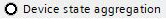
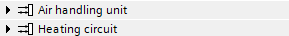
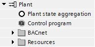
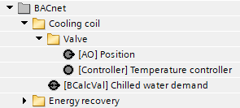
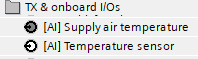
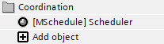
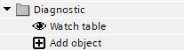
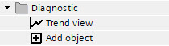
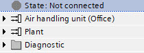

植物导航视图
这Project tree导航视图包含一个自动化站上的一个或多个工厂及其组件。
Working with the plant navigation view
设备工具栏 | 描述 |
|---|---|
全部折叠 | 折叠植物文件夹结构。打开编程编辑器时，该文件夹会折叠。 |
全部展开 | 展开植物文件夹结构。 |
| 在植物导航视图中添加新植物。 |
 添加植物
添加植物
项目树 | 描述 | |
|---|---|---|
状态 设备状态聚合  | State:显示各州 Device state aggregation:聚合主设备设备级的所有状态，可用于控制程序逻辑。 | |
<植物名称>  | 显示植物及其组成部分。 这些图标指示图表是否映射到 BACnet 以及图表是否被锁定。 | |
控制程序和工厂状态聚合  | Plant state aggregation:聚合一次设备工厂级的所有状态，可用于控制程序逻辑。 Control program:显示控制程序及其所使用的图表和子图名称。 | |
BACnet  | 显示所有 BACnet 对象。 | |
资源 | TX & Onboard I/Os  | 显示添加到的所有 TX 和板载 I/OsI/O configuration任务。 图标指示图表中 I/Os 是否已使用（黑色）或未使用（白色）。 |
MODBUS | 显示添加到的所有 Modbus I/OsModbus任务。 图标指示图表中是否使用了 I/Os。 | |
KNX PL-Link | Shows all KNX PL-Link objects. 这些图标指示类型是设备图表、输入、输出还是值。 | |
M总线 | 显示所有 M 总线对象。 这些图标指示类型是设备图表、输入、输出还是值。 | |
BACnet references | 显示所有 BACnet 引用。 图标指示类型是输入、输出还是值。 | |
协调  | 显示所有组管理器对象、调度程序对象和日历对象。 | |
诊断 | 手表表  | 打开Watch table用于监控引脚数据。 |
趋势视图  | 打开Trend view在运行时监视引脚数据。 | |
植物  | 将新植物或现有植物从Library. | |